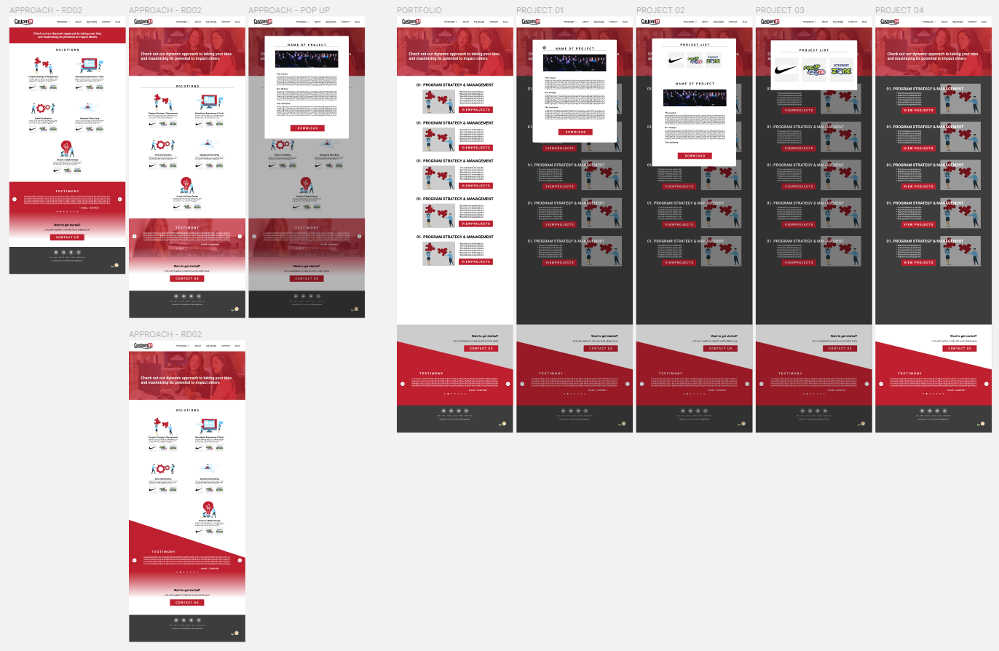

SUMMARY
This website is for CustomED, an education
nonprofit from New Jersey. Their previous website was based on
WordPress, but they needed to switch over to Wix while reorganizing
the website content. I helped with designing, prototyping, and
developing the UI.
Disclaimer: None of the materials are my
property and all rights remain with CustomED and its partners.
TASKS
Confidential things I worked on for this website:
- Market Research
- Competitive Analysis
- User Persona
- Ideation & Brainstorm
- User Testing
- A | B Testing
- Next Steps of Website
Other features I worked on for this app:
- Design user flow and wireframes to map out the Portfolio
piece that will be used to showcase past projects
- Create a list of services offered by the company
- Include a contact form that makes it easier for people
visiting the website to contact the staff with specific
requests
- Organize website pages into relevant categories to create a
more intuitive navigation bar
- Transfer relevant Blog contents from the old website to the
new website
- Update graphics to suit current design trends
- Create a portfolio
section showcasing past projects as well as a section for selling
off-to-shelf products.
IDEATION
The previous website needed to be more intuitive and have a better
organized navigation bar. More importantly, it needed a portfolio
section showcasing past projects as well as a section for selling
off-to-shelf products.
During the ideation phase, I reordered the web pages in the
navigation bar. I also created a user flow to make the portfolio
section easy to use, implementing pop up functions so the website
users can get to their goal with less steps. I also helped with the
ideation process for the off-to-shelf products and how to include
them in the final version of the website.
SITEMAP
The ideation process included several people discussing the
information architecture through the sitemap. This is one of the
latest versions used to determine the website format:
LOW FIDELITY
MID FIDELITY

FINAL PROTOTYPE
We transferred the updated copy for the website to the new Wix
page, as well as updated pictures and graphics for the website. The
new website is available here:
VIEW PROTOTYPE